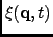

Next: Parameters
Up: Dynamic Coherent Structure Factor
Previous: Dynamic Coherent Structure Factor
Contents
Theory and implementation
Another memory function that can be calculated by nMOLDYN is the memory function related to the coherent intermediate
scattering function. It is defined through the corresponding memory function equation
The memory function
, which depends on time as well as on q, permits the analysis of memory effects on
different length scales. From a numerical point of view the calculation of the memory function equation relevant to the coherent
intermediate scattering function is completely analogous to the case of the VACF memory function, the discrete
time signal being here
See Section 4.2.4.11 for more details about auto-regressive process.
In the framework of the Autoregressive model, nMOLDYN allows the intermediate coherent scattering function, its Fourier
spectrum (the coherent dynamical structure factor) and its memory function to be computed on a rectangular grid of
equidistantly spaced points along the time- and the q-axis, repectively. The user is referred to Section
4.2.4.11 for more theoretical details. The dynamical variable of the correlation function under consideration,
is considered as a discrete "signal", which is modeled by an autoregressive stochastic process of order P. For each
q-values the program calculates the set of the relevant P complex coefficients  of the stochastic process,
averaging aver all atoms of the system and over all cartesian components. The correlation functions and their Fourier
spectra are then computed according to the algorithm described in Section 4.2.4.11.
Starting from the discretized memory function equation, which relates the time evolution of the correlation function to its
memory function, and using the correlation function calculated by the AR model, the program computes for each q-value the
discretized memory function (see Section 4.2.4.11).
The program performs the above calculations isotropically.
of the stochastic process,
averaging aver all atoms of the system and over all cartesian components. The correlation functions and their Fourier
spectra are then computed according to the algorithm described in Section 4.2.4.11.
Starting from the discretized memory function equation, which relates the time evolution of the correlation function to its
memory function, and using the correlation function calculated by the AR model, the program computes for each q-value the
discretized memory function (see Section 4.2.4.11).
The program performs the above calculations isotropically.
Next: Parameters
Up: Dynamic Coherent Structure Factor
Previous: Dynamic Coherent Structure Factor
Contents
pellegrini eric
2009-10-06